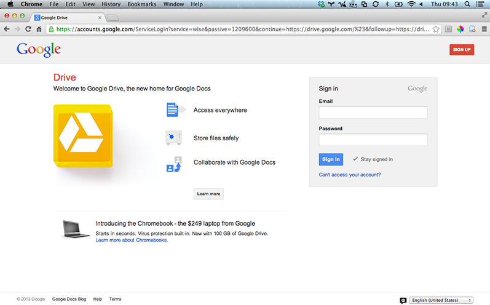

Google Drive
Store & Share

What is Google Drive?
Pinterest is an online pin board, a visual take on the social bookmarking site. Unlike other social bookmarking sites, such as Digg and StumbleUpon, content shared on Pinterest is driven entirely by visuals. In fact, you can’t share something on Pinterest unless an image is involved.
First Steps
- Go to Google Drive.
- Sign in with your Google account, or create a new one.
Features
- Google Docs, Sheets, and Slides are built in to Drive.
- Safe, secure, shareable.
- Chat, discuss & mentions.
- Go back in time with revision history.
How to share
- Go to drive.google.com.
- Check the box next to the file or folder you'd like to share.
- Click the google drive share icon Share icon.
- Choose a visibility option: "Private," "Anyone with the link" or "Public on the web."
- Type the email addresses of the people you want to share with in the text box below "Add people." You can add a single person, a mailing list, or choose from your contacts.
- Choose the access level from the drop-down menu next to each collaborator: "Can view," "Can comment," or "Can edit."
- Click Share & save.
- Send a link to a shared file.
If you’ve set a file or folder to "Anyone with the link" or "Public," you can send the link to another person and they’ll be able to access it.
- Go to drive.google.com.
- Check the box next to the file or folder you'd like to share.
- Click the Share icon google drive share icon.
- Copy the link at the top of the sharing settings.
- Send the link to another person or mailing list in an email or chat.
Send a file as an email attachment
Google Drive eliminates the need to send files as email attachments, but if you absolutely must, here's how:
- Open the file you'd like to share.
- Go to the File menu, and select Email as attachment.
- Select a file type from the drop-down menu.
- Enter the email addresses of the people to whom you'd like to send the file. If you'd like, you can also add a subject and a message.
- Click Send. Recipients will receive the file as a downloadable attachment in the format you've selected.
Notify people when you share something
Whenever you share something with someone, they’ll receive an email notification to let them know they have access and can retrieve what you shared the next time they sign into Google Drive. Prefer not to notify them? Uncheck the "Notify people via email" box.
Add lots of collaborators quickly by sharing with a Google Group.